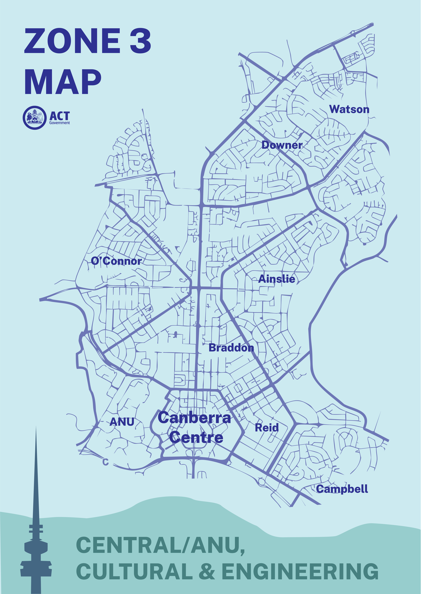
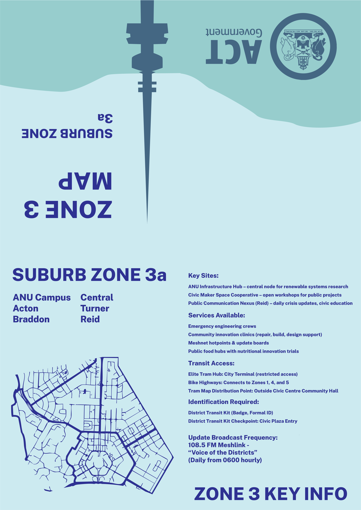
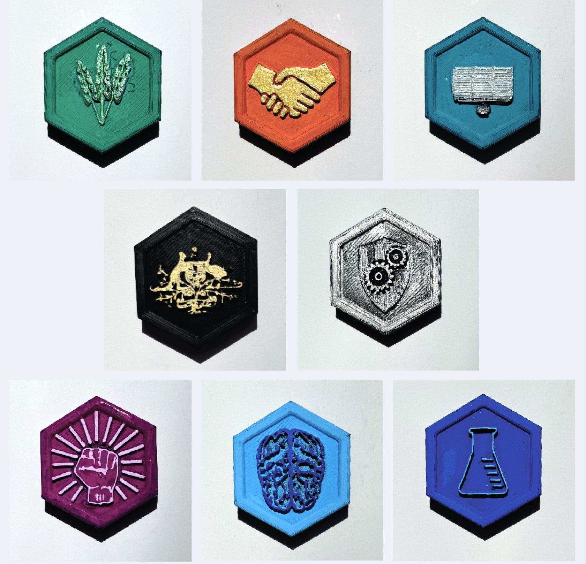

The new Canberra redrawn around the eight zones. Maps are handed out at tram stops before each zone change, since locals get around by memory and landmarks rather than phones.
For this project I imagined Canberra in 2050. In my version of the future, decades of climate inaction have left most of the Australian coast unliveable, so people move inland and Canberra fills up with climate migrants. A coordinated cyberattack also cuts the undersea internet cables, so the country loses its connection to the rest of the world and goes digitally silent. To cope, the city gets rebuilt into eight self-contained districts, each with its own job, its own solar microgrid, and its own way of getting around without fuel or the internet.
Speculative design is really about building a world that feels believable, so the brief was not about making one nice object. I had to design a set of entries, and they had to sit across three different scales so the world held together properly. The micro scale is the small personal things a single person would carry, the meso scale is the mid level systems like maps and how the districts connect, and the macro scale is the big picture stuff like governance and how society is run. Needing entries at all three sizes is what stops the world from being just an idea and makes it feel like somewhere people actually live.
From there I designed the artefacts below: the eight district badges that mark which zone you work in, a district map and a whole of Canberra map, a transit kit built around a passport and pin, protest posters from the arts and culture pushback against the new system, and a daily radio broadcast that keeps locals updated.

Eight badges, one for each district. Your badge marks which zone you work in, and anyone without one is read as a student, a child, or retired through their passport instead.


The new Canberra redrawn around the eight zones. Maps are handed out at tram stops before each zone change, since locals get around by memory and landmarks rather than phones.

The map mocked up as the printed zine you would actually pick up at a stop.


Posters from the arts and culture uprising. With university courses cut back to frontline jobs like teaching, medicine and engineering, people who wanted to study culture and the arts pushed back. Shown flat and pasted up on the street.
With no internet, a daily radio broadcast is how the districts stay updated on the weather, bike highway congestion and transport problems. The poster points people to the right frequency, and the broadcast itself plays above.